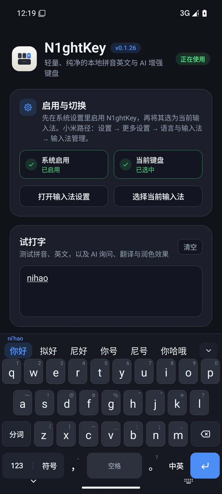

Android · 输入法
N1ghtKey
用拼音、英文和诗词候选打字，用手势移动光标和编辑。日常输入在本机处理，也可以按需使用 DeepSeek 询问、翻译和润色。

拼音、英文与诗词
中文全拼、简拼与中英混输共用同一条候选流程。输入过程中不必反复离开键盘，诗词、短语、邮箱、网址和算式也可以直接进入候选区。
中文与混输
支持全拼、简拼和中英混输，候选可展开浏览。需要时可开启 z/zh、c/ch、s/sh、n/ng 等拼音模糊音。
英文输入
提供英文词典补全与常用词序联想。中文输入到一半切换英文时，已键入的字母会保留，不必从头再打。
诗词候选
键入诗句的拼音首字母后，匹配的唐诗、宋词句子会出现在候选中。内置语料覆盖常见名句，并按候选规则参与排序。
短语与联想
内置中文词库支持多字短语，候选会参考上下文和本地使用习惯排序。姓名、常用表达和新词也能逐步适应用户。
输入小工具
在算式末尾输入 = 或 ＝，结果会直接出现在候选栏。邮箱域名、网址后缀和日期时间也会给出对应建议。
中英标点
字母长按符号随当前模式切换。中文模式优先给出中文标点和全角符号，英文模式给出半角符号，键帽角标与实际输入保持一致。
按键与编辑手势
常用编辑动作集中在按键本身。短按完成输入，按住与滑动则承担移动、删除、清空和选符。
空格拖动光标
按住空格后向左或向右滑动，插入点会跟着移动。调整一句话时不必伸手指去点正文。
退格连删与上滑清空
按住退格会连续删除，在退格键上向上滑可清空当前输入。清空后仍可从键盘内「已清空 · 撤回」恢复。
一个键帽，多种字符
按住字母可选择符号或大写，向不同方向滑动可快速取到上档字符。快捷符号也会跟随中英文模式切换。
长按候选清理学习
长按候选会删除对应的本机用户词和前后接联想，但不会永久屏蔽应用内置的基础词典。若该词从基础词库重新出现，属于正常行为。
剪贴板与短语
刚复制的文字会短暂出现在工具栏。展开「剪贴板」可查看、粘贴或管理最近内容，常用地址、回复和短句可以置顶为随手取用的短语。
- 最近内容
- 当前剪贴板内容在面板中按原文读取。持久保存的最近历史和置顶项最多各 12 条，单条保存时截取到 4,096 个字符，避免历史无限增长。
- 置顶短语
- 最多置顶 12 条，置顶项不会因普通历史清理而一起消失，可在条目中单独取消置顶或删除。
- 文本范围
- 面板处理纯文本内容。当前项可先查看完整预览再决定粘贴或删除，重新打开后由已保存历史恢复的内容则受 4,096 字符上限约束。
- 私密输入
- 密码框与系统标记为禁止个性化学习的输入框会关闭剪贴板显示与本地学习。Android 13 及以上还会跳过被系统标记为敏感的剪贴板内容。
键盘里的 AI
键盘工具栏提供三个彼此独立的功能。它们共享 DeepSeek 密钥与网络条件，但用途不同，处理内容也有不同范围。
AI 询问
点击后输入问题，可选择是否附上当前输入框中的文字。询问模型可在 Flash 与 Pro 之间切换，也可开启「深度思考」。结果可插入、复制或替换原文。
翻译
优先处理选中的文字，没有选区时读取当前段落。中文译为自然英文，英文译为自然简体中文，并保留换行、人名、数字和代码。
润色
同样优先处理选区，否则处理当前段落。可选择自动判断、长辈、老师、职场或朋友语气，随后从 2 至 3 个候选版本中选择。替换后可撤回。
请求条件
- 先在设置页保存自己的 DeepSeek API Key。未配置密钥时，点击 AI 功能只会打开配置入口。
- 三个功能都由用户主动触发。翻译和润色在点击对应按钮后开始请求，AI 询问则在发送问题时开始请求。
- 密码输入框内会禁用 AI、剪贴板和本地学习。系统标记为禁止个性化学习的输入框会关闭剪贴板和本地学习，但其中手动发起的 AI 请求仍可能联网，敏感内容不应交给在线功能处理。
- 请求直接发往
api.deepseek.com，API Key 随请求作为授权信息发送。服务端如何处理与保留内容，以 DeepSeek 账户适用的服务条款为准。
实际发送范围
- AI 询问
- 发送用户填写的问题，以及用户选择保留的当前选中文字或当前段落。未保留附件时不会附带输入框正文。
- 翻译
- 发送选中的文字。没有选区时发送当前段落，长度上限约为 4,000 个字符。
- 润色
- 发送待润色选区或段落，以及最多 200 个字符的前文、120 个字符的后文、应用类型、输入框提示和当前语气方向。这些上下文用于判断沟通对象与场景，不会取用整段文档历史。
外观、启用与更新
主题可跟随系统，也可固定为深色或浅色。键盘高度能在 80% 至 125% 之间调整，按键振动与拼音模糊音分别控制。横屏会缩短键盘基准键高以减少占位，用户的高度设置仍然生效。设置页在宽屏设备上采用双栏布局。
- 从 GitHub Releases 下载最新 APK。若由浏览器或文件管理器打开安装包，Android 要求授予「安装未知应用」权限时，应授权给该浏览器或文件管理器。只有从 N1ghtKey 的内置更新器打开安装包时，才授权给 N1ghtKey。
- 打开 N1ghtKey 设置页，点击「打开输入法设置」或「去开启」，在系统输入法管理中启用 N1ghtKey。小米设备通常位于「设置 → 更多设置 → 语言与输入法 → 输入法管理」。
- 回到设置页点击「选择当前输入法」，从系统键盘选择器选中 N1ghtKey，再到任意文本框试打。
- 设置页的「版本与更新」会检查 GitHub Releases，并在下载后核对应用签名再调起系统安装器。网络不稳定时可重试，也可从 Release 页面手动下载。
- 不需要 AI 功能时可以不配置密钥。输入、联想、手势、剪贴板和词库仍可本地使用。
兼容与数据
- 系统版本
- Android 8.0（API 26）及以上。
- 应用标识
- 应用包名
dev.cheng.keyboard，系统输入法名称显示为 N1ghtKey。 - 屏幕布局
- 支持竖屏与横屏。横屏会采用更低的键盘基准键高，设置页在宽屏下排为双栏。
- 发布方式
- GitHub Releases 提供 APK 与应用内更新清单。安装包与当前应用不一致或签名不匹配时，内置更新器会拒绝继续安装。
- 本地数据
- 设置、个人词频、联想记录和剪贴板文本保存在应用私有数据中。用户词、最近剪贴板、置顶项和 API Key 均可在应用内清除。
- 系统备份
- 当前版本关闭 Android 应用备份，并排除文件、数据库和偏好设置的系统云备份与设备迁移。
- 网络用途
- 网络用于检查与下载应用更新，以及用户主动使用 AI 询问、翻译或润色。Manifest 声明联网、振动和应用内安装权限。
- API Key
- 当前版本把新保存的密钥写入 Android 加密偏好存储，写入不会退回明文。若加密存储无法初始化，读取可回退到旧版明文偏好。若加密库可用但缺少对应密文，应用会读取旧明文并尝试迁移后删除明文副本。密钥不会随普通用户词和剪贴板展示，但会在用户发起的 DeepSeek 请求中作为授权信息传输。
- 开源许可
- 应用源码采用 GPL-3.0。中文词典、英文词频与诗词语料各有独立来源和许可。历史版本、安装包与更新说明见 GitHub Releases。